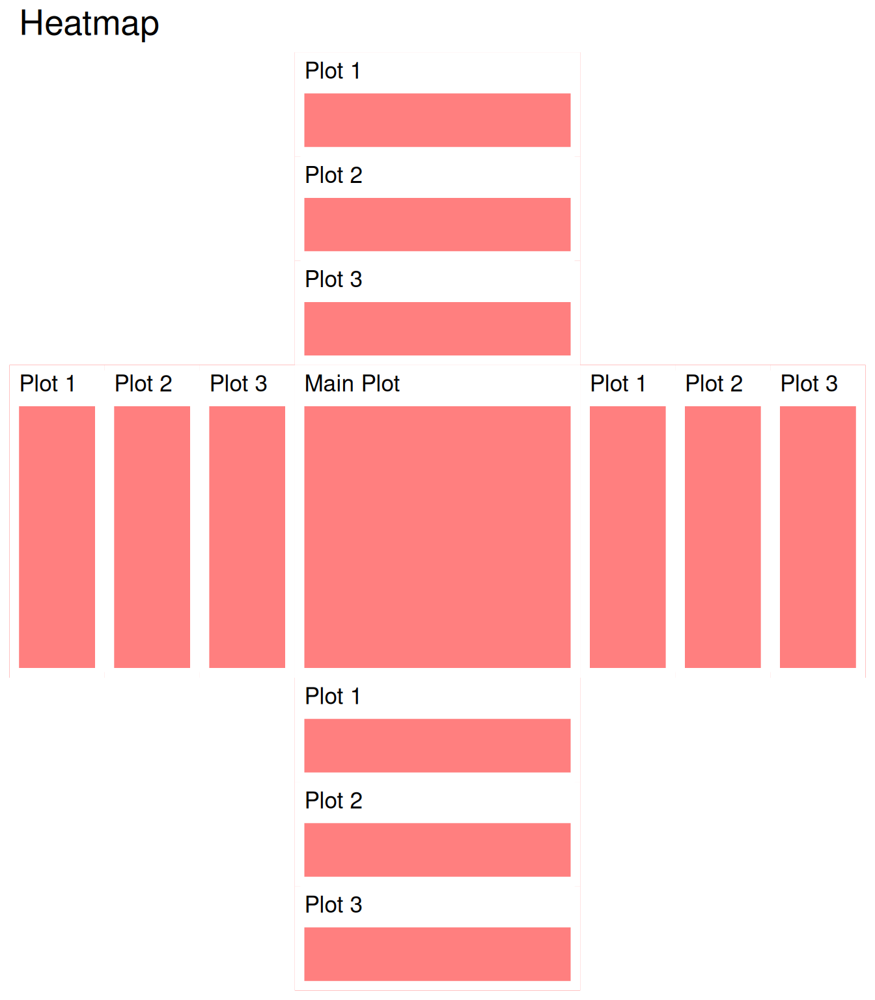
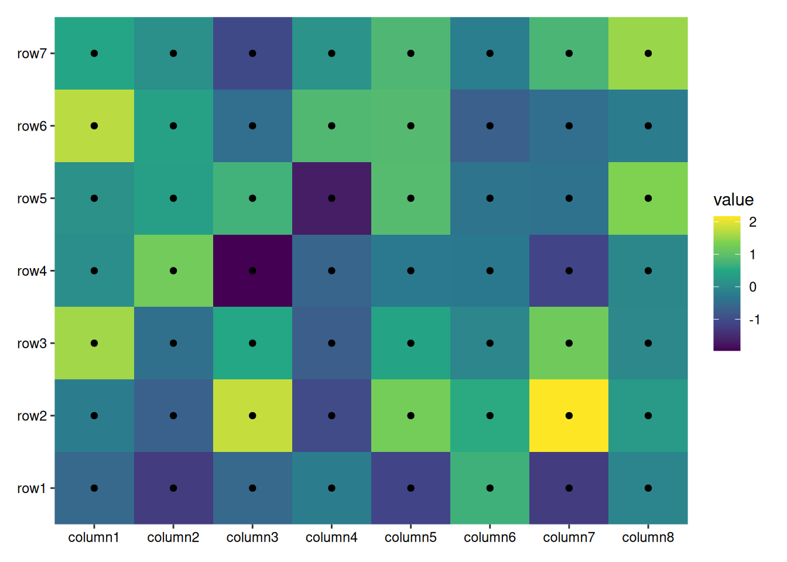
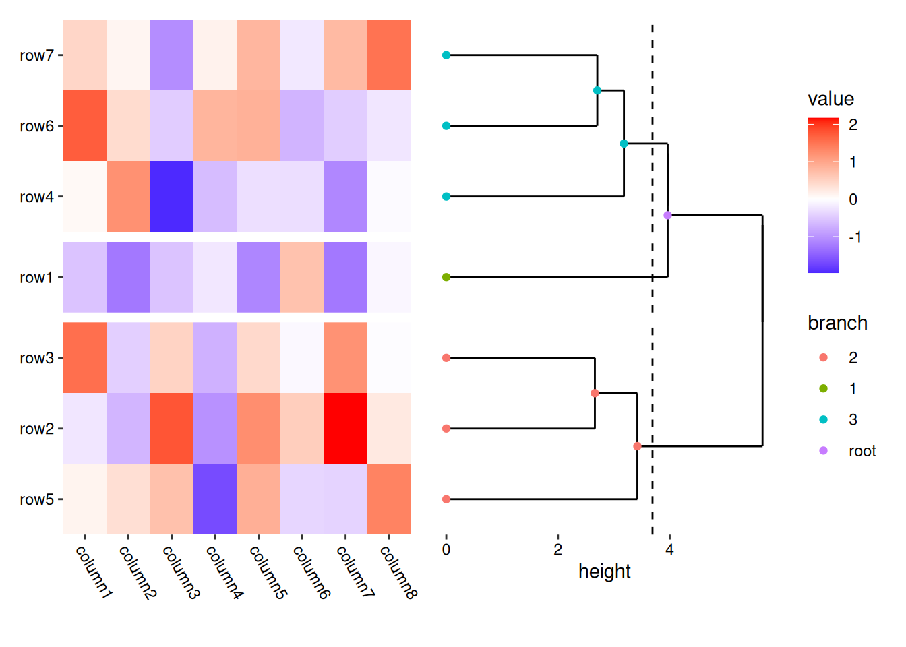
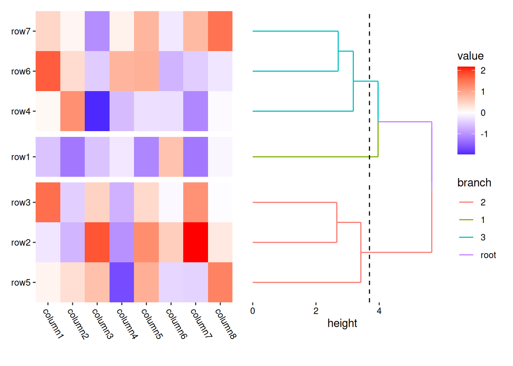
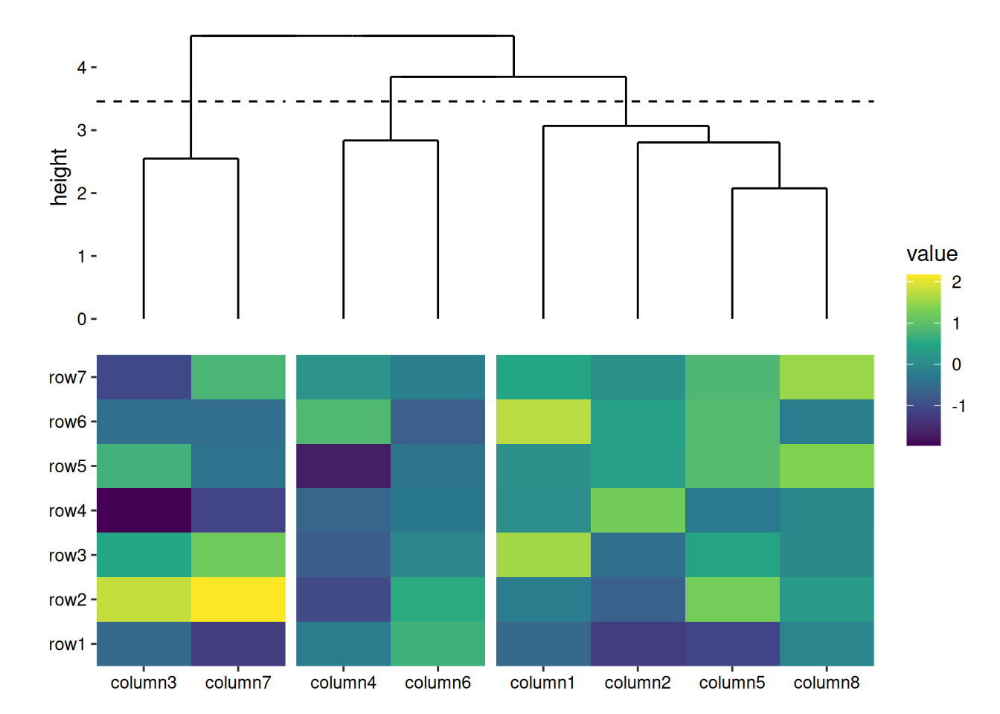
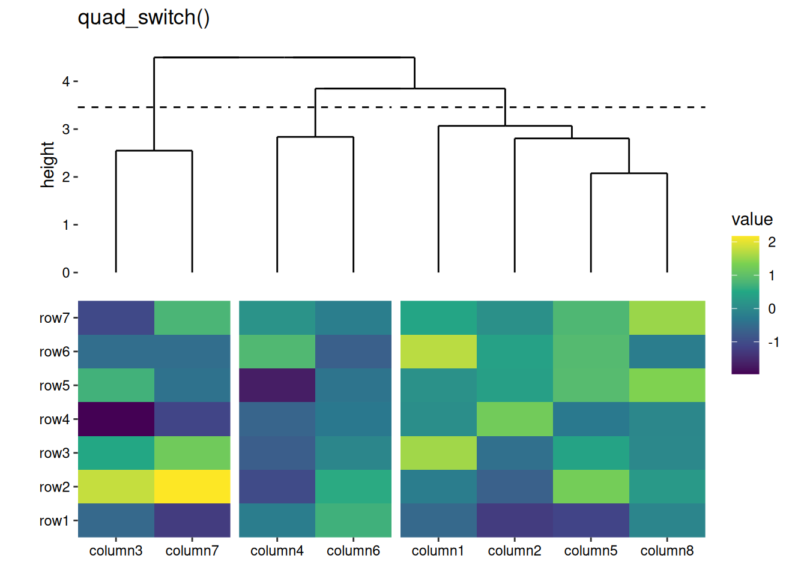
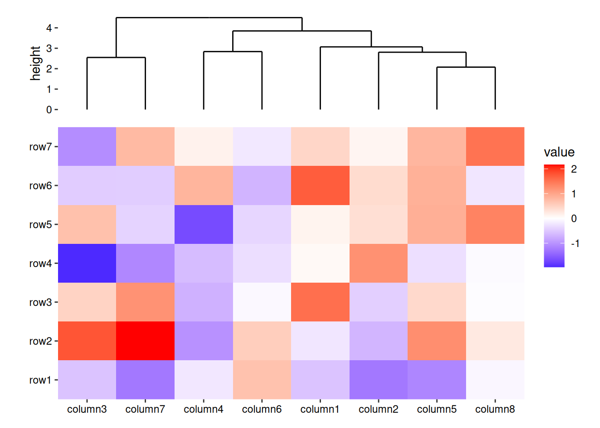
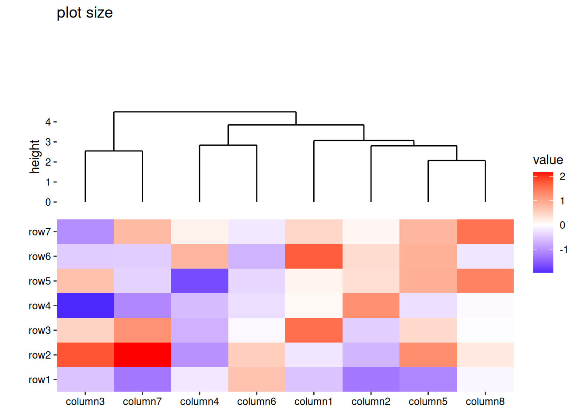

Code
library(ggalign)
## Loading required package: ggplot2
set.seed(123)
small_mat <- matrix(rnorm(56), nrow = 7)
rownames(small_mat) <- paste0("row", seq_len(nrow(small_mat)))
colnames(small_mat) <- paste0("column", seq_len(ncol(small_mat)))The heatmap_layout() function provides a powerful way to create customizable heatmaps in R using ggplot2. This chapter will guide you through its usage.
heatmap_layout() is a specialized version of quad_alignb(), which itself is a specific variant of QuadLayout (quad_layout()) designed to align observations both horizontally and vertically. We introduce heatmap_layout() directly, as it is more familiar to many users, especially those experienced with popular heatmap packages like pheatmap and ComplexHeatmap.
library(ggalign)
## Loading required package: ggplot2
set.seed(123)
small_mat <- matrix(rnorm(56), nrow = 7)
rownames(small_mat) <- paste0("row", seq_len(nrow(small_mat)))
colnames(small_mat) <- paste0("column", seq_len(ncol(small_mat)))
heatmap_layout() simplifies the creation of heatmap plots by integrating essential elements for a standard heatmap layout, ensuring that the appropriate data mapping and visualization layers are automatically applied. ggheatmap() is an alias for heatmap_layout().
As mentioned in Section 2.1, we typically require a matrix for the Layout which need align observations. Internally, fortify_matrix() will be used to process the data. You can provide a numeric or character vector, a data frame, or any other data type that can be converted into a matrix using as.matrix().
ggheatmap(small_mat)→ heatmap built with `geom_tile()`
The ggheatmap()/quad_layout() functions arrange plots in the Quad-Side layout of the main plot. When the layout is initialized, a ggplot object is automatically created for the main plot.
For ggheatmap(), the matrix input will be converted into a long-format data frame when drawing. The data in the underlying ggplot object includes the following columns:
.xpanel and .ypanel: the column and row panel
.x and .y: the x and y coordinates
.row_names and .column_names: A factor of the row and column names of the original matrix (only applicable when names exist).
.row_index and .column_index: the row and column index of the original matrix.
value: the actual matrix value.
The default mapping will use aes(.data$.x, .data$.y), but can be customized using mapping argument.
By default, the main plot is regarded as the active plot, meaning you can add ggplot2 elements directly to the main plot.
ggheatmap(small_mat) +
geom_point() +
scale_fill_viridis_c()→ heatmap built with `geom_tile()`
By default, ggheatmap() adds a heatmap layer. If the matrix has more than 20,000 cells (nrow * ncol > 20000), it uses geom_raster() for performance efficiency; for smaller matrices, geom_tile() is used. You can explicitly choose the layer by providing a single string ("raster" or "tile") in the filling argument.
ggheatmap(small_mat, filling = "raster")ggheatmap(small_mat, filling = "tile")Note, the filling layer will always use mapping of aes(.data$.x, .data$.y), if you want to customize filling, you can set filling = NULL, which will remove the filling layer and allow you to add custom filling geoms.
ggheatmap(small_mat, filling = NULL) +
geom_tile(aes(fill = value), color = "black", width = 0.9, height = 0.9)A heatmap pie charts can be easily drawn:
set.seed(123)
ggheatmap(matrix(runif(360L), nrow = 20L), filling = NULL) +
geom_pie(aes(angle = value * 360, fill = value))For more complex customizations of pie charts, you can try using ggforce::geom_arc_bar() instead.
When working with large heatmaps, it’s often beneficial to rasterize the heatmap body layer. You can achieve this by using the raster_magick() function. The res argument controls the resolution of the raster image. By default, the res argument matches the resolution of the current device, but specifying a different value can help reduce the resolution of the rasterized heatmap body.
ggheatmap(small_mat, filling = NULL) +
raster_magick(geom_tile(aes(fill = value)), res = 50)By leveraging raster_magick(), you can also perform image post-processing using the magick package. This allows for custom image resizing with filters.
ggheatmap(small_mat, filling = NULL) +
# Use `magick::filter_types()` to check available `filter` arguments
raster_magick(geom_raster(aes(fill = value)),
magick = function(image) {
magick::image_resize(image,
# we resize to the 50% of width
geometry = "50%x", filter = "Lanczos"
)
}
)Note: When using magick::image_resize(), you should specify the geometry argument to resize the image. If only the filter is specified, it will only distort the image data (though subtle). For more information on image resizing, refer to ImageMagick’s resize documentation.
You can also rasterize all plots in the layout directly with raster_magick(). This method is defined for both ggheatmap()/quad_layout() and stack_layout() objects.
Additionally, You can use external packages like ggrastr or ggfx to rasterize the heatmap body.
ggheatmap(small_mat, filling = FALSE) +
ggrastr::rasterise(geom_tile(aes(fill = value)), dev = "ragg")
Likewise, you can also rasterize all plots in the layout directly with ggrastr::rasterise() for both ggheatmap()/quad_layout() and stack_layout().
ggrastr::rasterise(ggheatmap(small_mat), dev = "ragg")→ heatmap built with `geom_tile()`
Furthermore, ggfx offers many image filters that can be applied to ggplot2 layers. See the package for the details.
In ggheatmap()/quad_layout(), annotations are handled by a stack_layout() object and can be positioned at the top, left, bottom, or right of the main plot (heatmap body).
By default, ggheatmap()/quad_layout() do not activate an annotation, You can use quad_anno() to activate an annotation, directing all subsequent additions to the specified annotation position. The quad_anno() function has the following aliases:
anno_top: A special case of quad_anno() with position = "top".anno_left: A special case of quad_anno() with position = "left".anno_bottom: A special case of quad_anno() with position = "bottom".anno_right: A special case of quad_anno() with position = "right".When quad_anno() is added to a ggheatmap()/quad_layout(), it will try to automatically create a new stack_layout() (either stack_align() or stack_free()) depending on whether you want to align observations in the specified direction. For top and bottom annotations, stack_alignv() or stack_freev() will be used; for left and right annotations, stack_alignh() or stack_freeh() will be applied.
Additionally, quad_anno() will set the active context to the annotation. This means that subsequent additions will be directed to the annotation rather than the main plot. We use the term active context in contrast to active plot (as described in Section 2.2), since the annotation is a Layout object.
ggheatmap(small_mat) +
theme(axis.text.x = element_text(angle = -60, hjust = 0)) +
# we set the active context to the left annotation
anno_left() +
align_dendro()→ heatmap built with `geom_tile()`By default, the annotation stack_layout() will inherit data from ggheatmap()/quad_layout(). If the observations require alignment vertically, this means the data from ggheatmap()/quad_layout() should be a matrix, the column annotations will also require a matrix and the matrix from ggheatmap()/quad_layout() will be transposed for use in the column annotations.
ggheatmap(small_mat) +
# we set the active context to the top annotation
anno_top() +
align_dendro()→ heatmap built with `geom_tile()`
You can further customize the layout design or add new plots in the annotation stack, as described in Chapter 2.
ggheatmap(small_mat) +
# in the heatmap body, we set the axis text theme
theme(axis.text.x = element_text(angle = -60, hjust = 0)) +
# we set the active context to the right annotation
anno_right() +
# in the right annotation, we add a dendrogram
align_dendro(k = 3L) +
# in the dendrogram, we add a point layer
geom_point(aes(color = factor(branch)))→ heatmap built with `geom_tile()`
In this example:
anno_right() initialize the right annotation stack, and change the active context to the right of the heatmap.align_dendro(k = 3L) adds a dendrogram to the annotation and sets itself as the active plot in the annotation stack.geom_point(aes(color = factor(branch))) is then added to this active plot within the annotation stack, here, it means the align_dendro() plot.ggheatmap() aligns observations both horizontally and vertically, so it’s safe to always use quad_anno() directly, as all annotations require a matrix, and the layout data is also a matrix. However, for quad_alignh() and quad_alignv() (which I’ll discuss in more detail in a later chapter), which only align observations in one direction, the data in the layout may not fit the data for the annotation (when the layout requires alignment of observations, we typically use a matrix, regardless of whether alignment is needed in one or two directions) - quad_alignh(): aligning observations in horizontal direction, for column annotations, we ll need a data frame for stack_free(). - quad_alignv(): aligning observations in vertical direction, for row annotations, we ll need a data frame for stack_free().
In both cases, quad_anno() won’t initialize the annotation by default, instead, you must provide the annotation stack_layout() manually.
Like adding plot in stack_layout() (Chapter 2), when the direction neeed alignment, you can add a stack_layout() regardless of whether it need to align observations.
To add a stack_layout() to the ggheatmap(), we must prevent the automatical creation of annotation by quad_anno() by setting initialize = FALSE
my_stack_align <- stack_alignh(small_mat) +
align_dendro(aes(color = branch), k = 3L)
ggheatmap(small_mat) +
theme(axis.text.x = element_text(angle = -60, hjust = 0)) +
anno_right(initialize = FALSE) +
my_stack_align +
layout_title("stack_align()")→ heatmap built with `geom_tile()`
my_stack_free <- stack_freeh(mpg) +
ggfree(mapping = aes(displ, hwy, colour = class)) +
geom_point(size = 2)
ggheatmap(small_mat) +
theme(axis.text.x = element_text(angle = -60, hjust = 0)) +
anno_right(initialize = FALSE) +
my_stack_free +
layout_title("stack_free()")→ heatmap built with `geom_tile()`Note when aligning the observations, you must ensure the number of observations is consistent in the direction. So for column annotations, you need transpose the data manually.
my_stack <- stack_alignv(t(small_mat)) +
align_dendro(aes(color = branch), k = 3L)
ggheatmap(small_mat) +
anno_top(initialize = FALSE) +
my_stack→ heatmap built with `geom_tile()`
quad_active()To remove the active context and redirect additions back to the heatmap body, you can use quad_active().
ggheatmap(small_mat) +
# we set the active context to the top annotation
anno_top() +
# we split the observations into 3 groups by hierarchical clustering
align_dendro(k = 3L) +
# remove any active annotation
quad_active() +
# set fill color scale for the heatmap body
scale_fill_viridis_c()→ heatmap built with `geom_tile()`
quad_switch()/hmanno()We also provide quad_switch()/hmanno() (heatmap annotation) which integrates quad_active() and quad_anno() into one function for ease of use. Feel free to use any of these functions to streamline your annotation process.
ggheatmap(small_mat) +
# we set the active context to the top annotation
quad_switch("t") +
# we split the observations into 3 groups by hierarchical clustering
align_dendro(k = 3L) +
# remove any active annotation
quad_switch() +
# set fill color scale for the heatmap body
scale_fill_viridis_c() +
layout_title("quad_switch()")→ heatmap built with `geom_tile()`ggheatmap(small_mat) +
# we set the active context to the top annotation
hmanno("t") +
# we split the observations into 3 groups by hierarchical clustering
align_dendro(k = 3L) +
# remove any active annotation
hmanno() +
# set fill color scale for the heatmap body
scale_fill_viridis_c()+
layout_title("hmanno()")→ heatmap built with `geom_tile()`You can specify the relative sizes of the heatmap body using the width and height arguments in the ggheatmap() function.
ggheatmap(small_mat, height = 2) +
anno_top() +
align_dendro()→ heatmap built with `geom_tile()`
Alternatively, the quad_active() function allows you to control the heatmap body sizes.
ggheatmap(small_mat) +
quad_active(height = 2) +
anno_top() +
align_dendro()→ heatmap built with `geom_tile()`The quad_anno() function allows you to control the total annotation stack size. The size argument controls the relative width (for left and right annotations) or height (for top and bottom annotations) of the whole annotation stack.
ggheatmap(small_mat) +
anno_top(size = 1) +
align_dendro()→ heatmap built with `geom_tile()`
You can also specify it as an absolute size using unit():
ggheatmap(small_mat) +
anno_top(size = unit(30, "mm")) +
align_dendro()→ heatmap built with `geom_tile()`
Note that the size of an individual plot (Section 2.4) does not affect the total annotation stack size. You must adjust the annotation size using the method described above.
ggheatmap(small_mat) +
anno_top() +
align_dendro(size = unit(30, "mm")) +
layout_title("plot size")→ heatmap built with `geom_tile()`ggheatmap(small_mat) +
anno_top(size = unit(30, "mm")) +
align_dendro() +
layout_title("annotation size")→ heatmap built with `geom_tile()`
In this chapter, we explored the usage of heatmap layouts. These features provide a strong foundation for visualizing matrix-based data in a structured way. However, as your visualization needs grow more complex, the ability to further customize and fine-tune the layout becomes essential.
In the next chapter, we will dive into the Layout Customize functionalities, where you can gain full control over your plot’s layout.